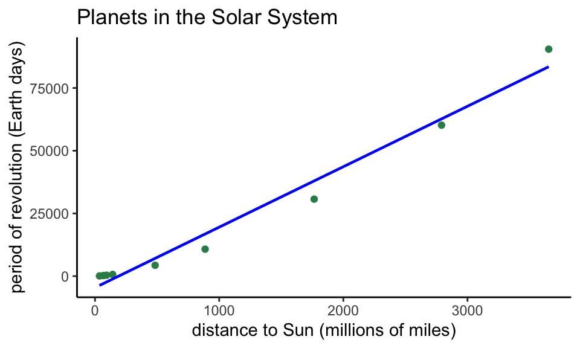

MATH 140: Scatter plots and Linear Regression
The planets data
The following code creates a data frame with 3 variables (named planet, distance, and period) and 9 observations. This data frame encodes information about the 9 planets in the solar system.
planets = data.frame(
planet=c("Mercury","Venus","Earth","Mars","Jupiter","Saturn","Uranus","Neptune","Pluto"),
distance=c(36,67,93,142,484,887,1765,2791,3654),
period=c(88, 225, 365, 687, 4332, 10760, 30684, 60188, 90467)
)Notes about this code:
planetsis the name of the data framedata.frame()is the command for creating a data frame- the data frame has three columns named
planet,distance, andperiod - the column entries are created with the
c()command. - the entries for a categorical variable such as the planet variable are enclosed, individually, with quotes.
- the units:
distanceis given in millions of miles from the Sunperiodis given in Earth days (how long it takes the planet to make one revolution around the Sun)
Making a scatter plot
We can make quick and clear scatter plots using the built-in R
command plot(), or higher quality plots using the package
ggplot.
Using plot()
In the worksheet we choose distance to be the
explanatory variable (\(x\)), and
period to be the response variable (\(y\)). The plot() command
produces a scatter plot:
plot(x=planets$distance,y=planets$period)But we should make our graphs more user friendly by adding a plot title and better axis labels:
plot(x=planets$distance,y=planets$period,
xlab="distance from sun (millions of miles)",
ylab="period of revolution (earth days)",
main="Planets in our solar system")We can even change the look of the points, as discussed in the Data and Descriptive Statistics Tutorial
Using ggplot()
The tidyverse package (which you’ve already installed) comes with an excellent graphics package called ggplot. If you load the tidyverse into your RStudio session, you will be able to produce graphics with ggplot.
To load the tidyverse into your session, run this line:
library(tidyverse)With the tidyverse loaded, you are ready to use the ggplot functions for generating graphs.
Basic scatter plot with ggplot
ggplot(data = planets,aes(x=distance,y=period)) +
geom_point()Adding color, labels, and changing themes.
ggplot(data = planets,aes(x=distance,y=period)) +
geom_point(col="seagreen")+
xlab("distance to Sun (millions of miles)") +
ylab("period of revolution (Earth days)") +
ggtitle("Planets in the Solar System") +
theme_bw()The correlation coefficient
We use the cor() command:
cor(planets$distance,planets$period)## [1] 0.9889708The least-squares linear model
Use the
lm()command (“lm” stands for linear model). Runninglm(y~x)where y and x are specified columns in your data frame will give the slope and \(y\)-intercept of the least-squares regression line:
lm(planets$period~planets$distance)##
## Call:
## lm(formula = planets$period ~ planets$distance)
##
## Coefficients:
## (Intercept) planets$distance
## -4578.8 24.1So, the slope of the least-squares line is 24.1 and the \(y\)-intercept is -4578.8.
Better yet, assign a name to the lm() command, like
fit, when you run it (as in the code below) and you have quick
access to all sorts of useful information:
fit=lm(planets$period~planets$distance)| Command | Result |
|---|---|
fit$coefficients |
\(y\)-intercept and slope of least-squares line |
fit$residuals |
list of the residuals |
fit$fitted.values |
list of the predicted values \(\hat{y}\) |
Plot the least-squares line
Using built-in R commands
RStudio likes to describe the \(y\)-intercept and slope of a line with the
constants \(a\) and \(b\), respectively. As in \[y=a + bx,\] and the command
abline(a= ..., b=...) will add a line with \(y\)-intercept \(a\) and slope \(b\) to a plot if you run these lines of
code in succession:
plot(x=planets$distance,y=planets$period,
xlab="distance from sun (millions of miles)",
ylab="period of revolution",
main="Planets in our solar system")
abline(a=-4578.8,b=24.1)
Making a Residual Plot
We can plot the \(x\)-coordinates against the residuals and add a dashed horizontal line through \(y = 0\) with this code
plot(planets$distance,fit$residuals)
abline(h=0,lty=2,col="brown3")In ggplot
With the geom_abline() command
Here are two approaches. The first adds the line with the
geom_abline() command by manually entering the slope and
y-intercept as found above:
ggplot(data = planets,aes(x=distance,y=period)) +
geom_point(col="seagreen") +
xlab("distance to Sun (millions of miles)") +
ylab("period of revolution (Earth days)") +
ggtitle("Planets in the Solar System") +
geom_abline(slope = 24.1, intercept = -4578.8,col="dodgerblue")+
theme_bw()Using geom_smooth()
The second approach to fitting a line to data is to use the
geom_smooth()command. The advantage here is that the code
generates the line from scratch - you don’t have to manually enter the
slope and \(y\)-intercept.
ggplot(data = planets,aes(x=distance,y=period)) +
geom_point(col="seagreen")+
xlab("distance to Sun (millions of miles)") +
ylab("period of revolution (Earth days)") +
ggtitle("Planets in the Solar System") +
geom_smooth(method='lm', formula=y~x, col="blue",size=.8,se=FALSE) +
theme_classic()
Notice the new “classic” theme!
Bonus Round: A Better Model
The residual plot makes clear that, even though the correlation coefficient is very close to 1, a curved model is better, one that can be represented by a polynomial with a higher power of \(x\).
To find the nature of the curved fit, we begin by comparing
log(x) to log(y).
Intermission: Logarithms
Recall, \(\log_{10}(x)\) = the power we need to raise 10 to in order to get \(x\). For instance, \(\log_{10}(100) = 2\) since 10^2 = 100$, \(\log_{10}(1000) = 3\), \(\log_10(1,000,000) = 6\), and \(\log_{10}(0.1)=-1\) since \(10^{-1} = \frac{1}{10}=0.1\).
End of Intermission
So, again, to find the nature of the curved fit, we begin by
comparing log(x) to log(y), and see whether
the association is linear.
ggplot(data=planets,aes(log10(distance),log10(period)))+
geom_point()+
ggtitle("Plotting log(distance) vs log(period)")+
theme_bw()Does this plot look linear?
Heck yeah! Super linear, in fact.
If the log-log plot is linear, then the slope of the least-squares line for the log-log data will equal the power in the curved fit for \(y\) and \(x\).
logfit=lm(log10(planets$period)~log10(planets$distance))
logfit$coefficients## (Intercept) log10(planets$distance)
## -0.3922215 1.5013054Notice the slope of this linear model is about 1.5, and this explains why we chose the \(x^{1.5}\) for the curved fit in the last question of the R Regression activity.